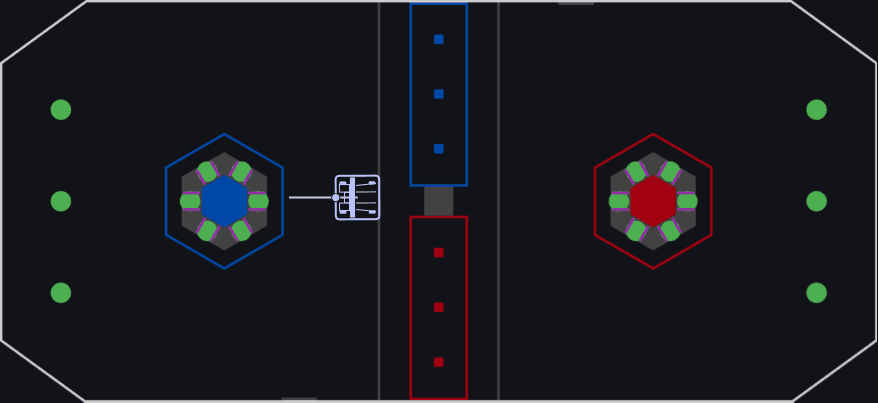

Switch to Carousel View
5142 Autos
×
Center 1 Coral GH

Far Left 1 Coral CD
Far Left 2 Coral CD
Far Right 1 Coral KL
Far Right 2 Coral KL
Far Left 1 Coral EF
Far Right 1 Coral IJ
Far Right 2 Coral KL
Center 1 Coral GH
Far Left 1 Coral CD
Far Left 2 Coral CD
Far Right 1 Coral KL
Far Right 2 Coral KL
Far Left 1 Coral EF
Far Right 1 Coral IJ
Center 1 Coral GH
←
→